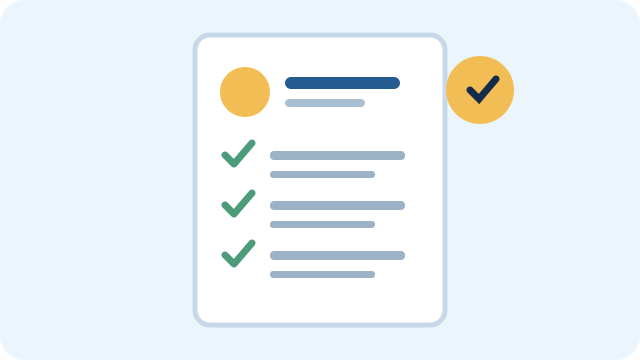

Build a clear, focused resume
Keep your resume organized and easy to scan. Use section headings, consistent formatting, and concise descriptions. For each application, highlight experiences and skills that connect to the position.
Sections to include
- Contact information: professional email, phone number, and relevant portfolio or LinkedIn link.
- Education: school, degree program, expected graduation date, and relevant coursework when useful.
- Experience: internships, part-time jobs, volunteer roles, and campus involvement.
- Projects: class or independent projects that demonstrate practical skills.
- Skills: relevant software, tools, languages, and professional strengths.
Write stronger bullet points
Begin with an action verb and explain what you did, how you did it, and what changed as a result. Use numbers only when they accurately describe your contribution.
GENERAL
Helped with social media.
MORE SPECIFIC
Created weekly social media posts for a student organization and tracked engagement to identify popular topics.
Before you submit
- Check spelling, dates, and contact information.
- Use a readable font and consistent spacing.
- Save the file with a professional name.
- Review the job posting and tailor relevant details.